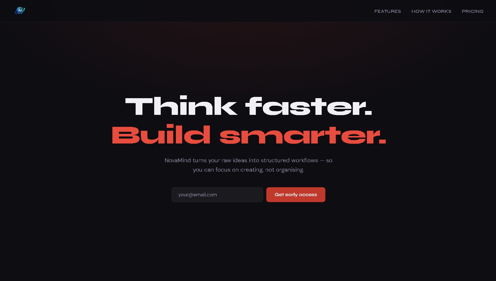
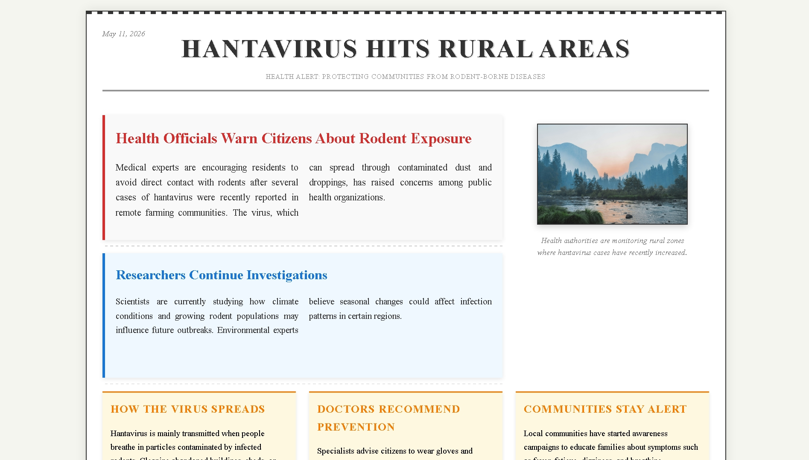

Hello, world —
I build clean, thoughtful experiences for the web.

A modern, responsive landing page built from scratch. Clean layout, strong hierarchy, mobile-first.
View Project
An editorial newspaper layout built entirely with CSS Grid
